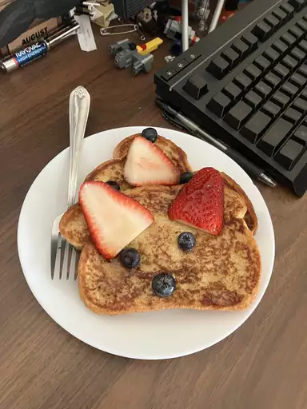

French Toast Recipe

Eggs: Eggs act as a binder, which means they help hold the batter together.
⅔ cup milk
1 teaspoon vanilla extract (Optional)
Gather all ingredients.
Whisk milk, eggs, vanilla, cinnamon, and salt together in a shallow bowl.